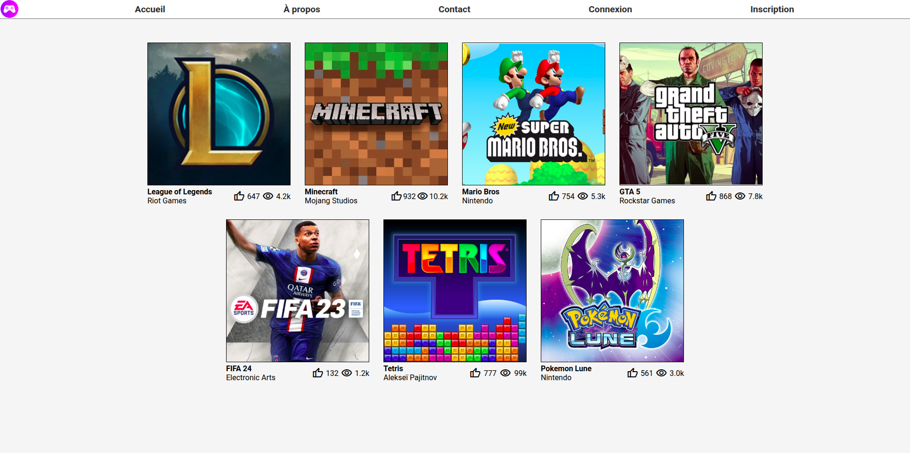
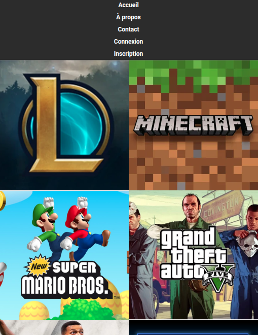
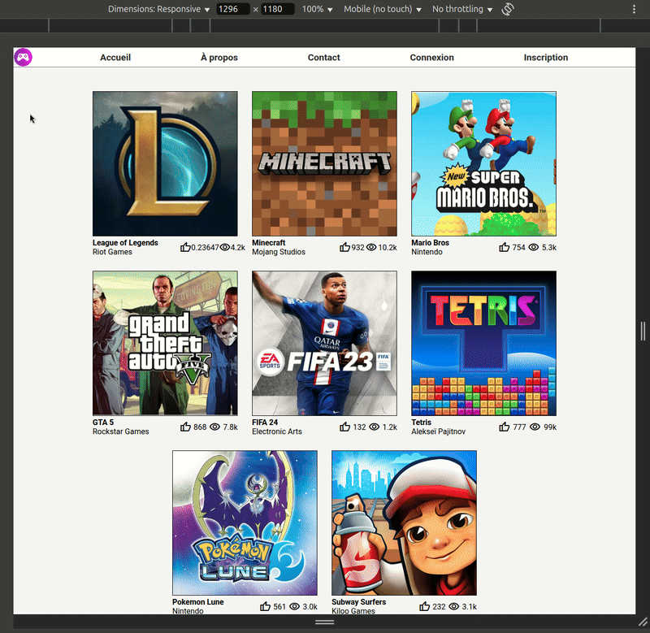

Objectif : Rendre responsive la page du TD3.

Lors de l'écrasement de la fenêtre la page doit s'adapter :

- Le header devient vertical et l'icône disparaît.
- Les tuiles de la page doivent se réorganiser en 2 colonnes.
- Les informations des tuiles (Titre, éditeur, likes, vues, ...) disparaissent.
- Les tuiles doivent être collées les unes aux autres et aux bords de la page.
- Le hover change et affiche les informations de la tuile.
- Attention : En écran "large", le hover doit revenir comme avant (bouton télécharger)
Astuce :
Testez votre page avec l'émulateur de téléphones de votre navigateur. Pour cela ouvrez l'inspecteur (clic droit -> Inspecter) puis cliquez sur l'icône téléphone en haut à gauche de l'inspecteur.
Démonstration :
